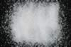

|
|
(For further information on spectroscopy, see:
http://speclab.cr.usgs.gov)
TITLE: Strontianite HS272 DESCRIPT
DOCUMENTATION_FORMAT: MINERAL
SAMPLE_ID: HS272
MINERAL_TYPE: Carbonate
MINERAL: Strontianite (Aragonite group)
FORMULA: SrCO3
FORMULA_HTML: SrCO3
COLLECTION_LOCALITY: Germany
ORIGINAL_DONOR: Hunt and Salisbury Collection
CURRENT_SAMPLE_LOCATION: USGS Denver Spectroscopy Laboratory
ULTIMATE_SAMPLE_LOCATION: USGS Denver Spectroscopy Laboratory
SAMPLE_DESCRIPTION:
IMAGE_OF_SAMPLE:

END_SAMPLE_DESCRIPTION.
XRD_ANALYSIS:
40 kV - 30 mA, 6.5-9.5 keV
File: stron272.out, -.mdi
References: JCPDS #5-418
Found: Strontianite solid solution
Comment: Very intense pattern of well-crystallized phase. The JCPDS
pattern is of synthetic SrCO3. All reflections of HS272 lie at
higher 2 theta values (smaller interplanar spacings) than the endmember
reference pattern, indicating substitution of a cation (such as Ca)
that has a smaller ionic radius than strintium.
J.S. Huebner, J. Pickrell, T. Schaefer, written communication(USGS)
END_XRD_ANALYSIS.
COMPOSITIONAL_ANALYSIS_TYPE: # XRF, EM(WDS), ICP(Trace), WChem
COMPOSITION_TRACE:
COMPOSITION_DISCUSSION:
END_COMPOSITION_DISCUSSION.
MICROSCOPIC_EXAMINATION:
END_MICROSCOPIC_EXAMINATION.
SPECTROSCOPIC_DISCUSSION:
END_SPECTROSCOPIC_DISCUSSION.
SPECTRAL_PURITY: 1b2b3b4_ # 1= 0.2-3, 2= 1.5-6, 3= 6-25, 4= 20-150 microns
| LIB_SPECTRA_HED: | where | Wave Range | Av_Rs_Pwr | Comment |
|---|---|---|---|---|
| LIB_SPECTRA: | splib04a r 4645 | 0.2-3.0µm | 200 | g.s.= |
| LIB_SPECTRA: | splib05a r 6437 | 0.2-3.0µm | 200 | g.s.= |
| LIB_SPECTRA: | splib06a r 21334 | g.s.= | ||
| LIB_SPECTRA: | splib06a r 21346 | g.s.= |
{kind=link}